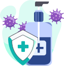

<!-- <ion-header [translucent]="true"></ion-header> -->

<ion-content [fullscreen]="true">
  <ion-card class="infoCard" style="background-image: url('../../assets/backgrounds/TabDefaultBackground.svg');">
    <ion-card-content>
      <h1>Orientações para prevenir a Sepse</h1>
      
    </ion-card-content>
  </ion-card>

  <ion-card class="tooltipCard">
    <ion-card-content>
      <div style="background-image: url('../../assets/icon/TooltipIcon.svg');"></div>
      <p>Entenda mais sobre os sinais de suspeição em <strong>Como saber se estou com Sepse?</strong></p>
    </ion-card-content>
  </ion-card>

  <div id="footBar">
    <div class="pageIndicator">
      <div class="tabsPageBullet current"></div>
      <div class="tabsPageBullet"></div>
      <div class="tabsPageBullet"></div>
      <div class="tabsPageBullet"></div>
      <div class="tabsPageBullet"></div>
      <div class="tabsPageBullet"></div>
    </div>
    <button class="tabsPageButtons" color="dark" (click)="previousPage()">Anterior</button>
    <button class="tabsPageButtons" color="primary" (click)="nextPage()">Próxima</button>
  </div>
</ion-content>
